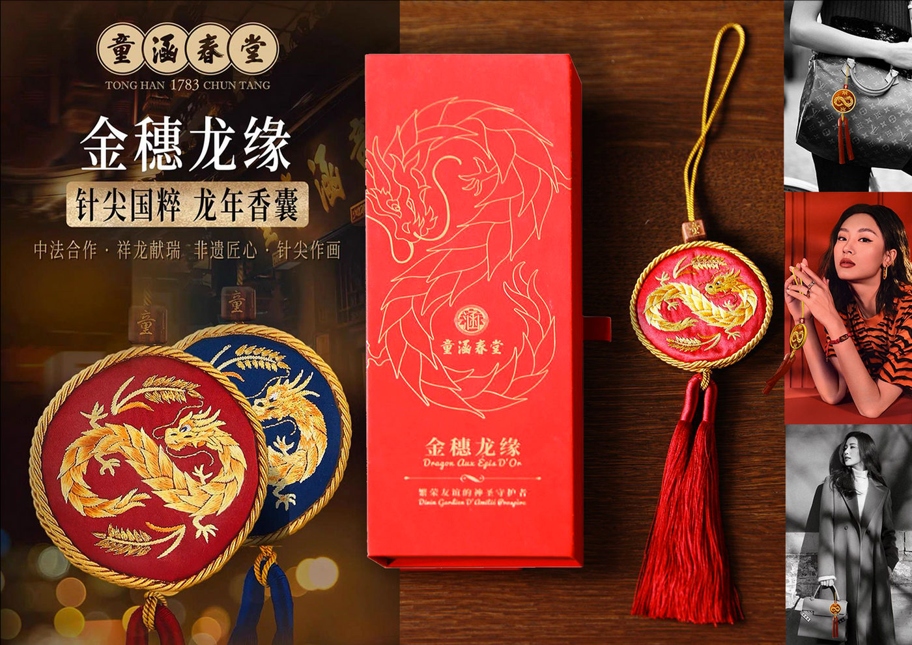

Direction artistique · Coffrets · Étiquettes · Identités de gamme
Packaging & vins
Du premier axe créatif à la mise en production, chaque projet articule structure, graphisme, matière et identité de marque.
Cette sélection réunit des coffrets, écrins, habillages et étiquettes conçus pour valoriser le produit et construire une présence immédiatement reconnaissable.
Les visuels issus d’une même commande sont regroupés dans un seul projet. La présentation permet ainsi de lire chaque univers dans sa continuité, comme pour les archives Cartier.
Les projets réunis

Almé Paris — coffrets
Déclinaison de l’identité Almé sur une famille de coffrets. La signature graphique, les proportions et les finitions construisent un écrin cohérent avec l’univers de la marque et ses accessoires.


Philips — Année du Lapin
Recherche d’un univers graphique et conception de coffrets événementiels pour le Nouvel An chinois. Les deux visuels sont réunis pour présenter la continuité de la commande, de l’axe créatif à son application sur le coffret.


Domaine de la Bégude
Création et structuration d’une identité d’étiquettes capable d’installer la gamme tout en distinguant ses cuvées. Le projet réunit la présentation du domaine et la déclinaison Pleine Nature.


La Grange d’Ernest
Création de l’identité et conception des étiquettes pour un couple de jeunes vignerons installés à Chevaline, en Savoie, au bord du lac d’Annecy. Les illustrations réalisées à l’aquarelle traduisent le paysage, ses reliefs et ses reflets dans une signature sensible et immédiatement reconnaissable.

Triplette — Cantarelle
Création d’un système graphique commun à plusieurs références. La variation des signes et des couleurs différencie les bouteilles tout en maintenant une lecture immédiate de la famille.

Jean-Étienne Chermette
Organisation d’une gamme cohérente autour d’une identité commune. La hiérarchie de l’information et les variations graphiques permettent à chaque vin d’exister tout en affirmant l’appartenance au domaine.

Maison Boanton — coffret montre
Conception d’un écrin prolongeant l’identité de la Maison et l’expérience de découverte de la montre. Le volume, l’ouverture et les finitions sont pensés comme une continuité du produit.

Écrin V
Recherche d’une architecture de coffret construite autour d’un signe fort. Les lignes du volume, les matières et le geste d’ouverture participent à une présentation précise et mémorable.


Tianqing Baijiu
Conception d’un coffret en édition limitée pensé comme une porte céleste protégeant une potion précieuse. La forme octogonale, le rayonnement doré et la palette céladon associent héritage chinois et expression contemporaine. L’ouverture devient un rituel en plusieurs temps — déverrouiller, révéler, partager — tandis que les recherches explorent plusieurs architectures, de l’écrin à double battant à la cage rotative, pour transformer la découverte de la bouteille en véritable cérémonie.